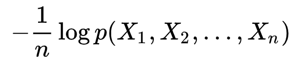
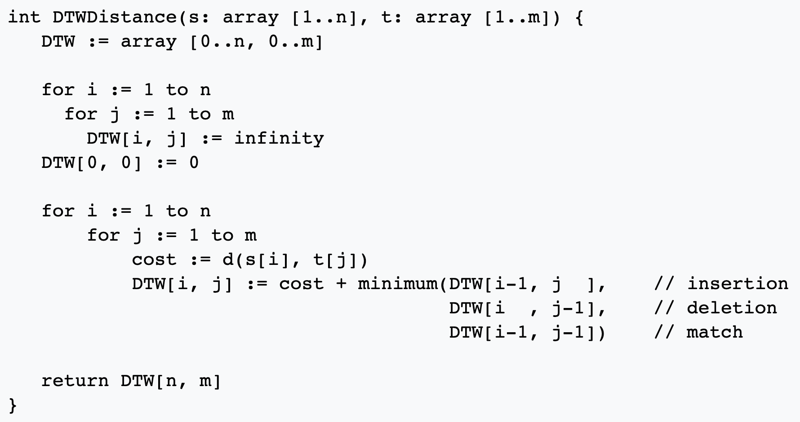
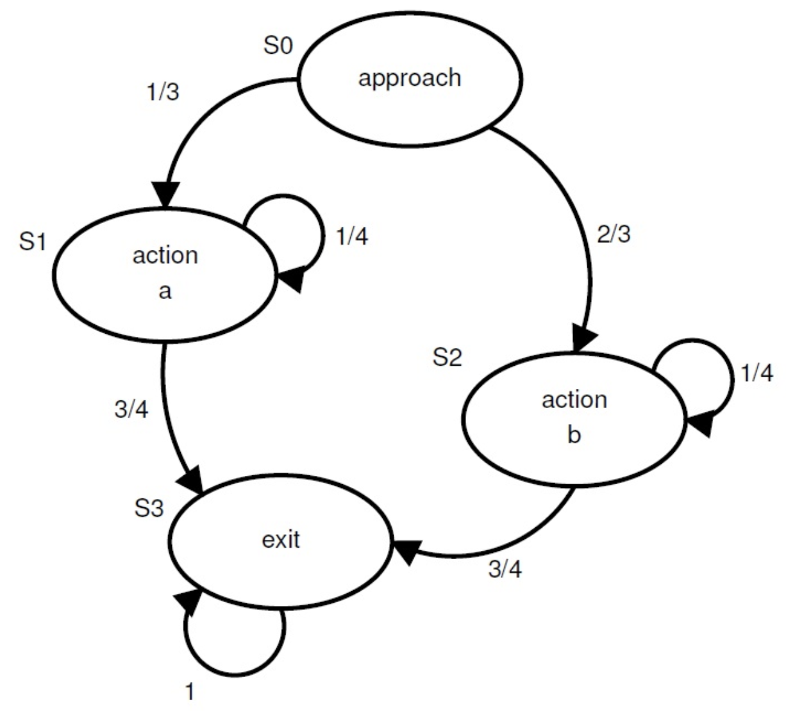

1. Which of the following is implied by S = A u B? x E S => x E A and x E B x E S => x E A or x E B x E A => x E S x E A => x E B None
2. Which of the following is equivalent to A => B? If A then B If B then A If ~A then ~B If ~B then ~A None
3. Which of the following is equivalent to A <=> B? A => B and !A => !B A => B and !B => A A => B and B B => A and A B => A and A => B
4. Which of the following equivalences for binary events A,B,P,Q,R are wrong? (A u B)' = A' n B' P u Q & ~P u R <=> Q u R !B and A=>B means !A A , A->B means B None of these are wrong
5. Which of the following are false for binary events A,B,C? (A + B)(A + C) = A + BC (!A + B)(A + B) = B A!C + AB!C = AC A = 1 B + !B = 1
6. Which expression can be used to capture the following problem: If either of 2 eggs breaks, I need to go to the store. But I stay home if both the eggs break. When do I go to the store? (if A denotes Egg 1 breaking and B denotes Egg 2 NOT breaking) AB + !A!B A!B + !AB AB + !(A + B) A A + !B
7. Which of the following are TRUE? If Mary is dancing, John is dancing. Mary is dancing. So, therefore, John is dancing There are clouds in the sky or it is not raining. There are clouds in the sky. Therefore, it is raining. A v (!B n D) => (B=>A and !D=>A) If Selena wears Blue, then Jen wears Green. If Selena wears Yellow, then Miley wears Green. If Jen does not wear Yellow, then Miley wears Blue. Therefore, Selena can wear Green. None
8. Which of the following is an example of the Central Limit Theorem? The PDF of the number on a die rolled infinitely many times is uniform. The PDF of the sum of the number rolled on a die infinitely many times is Gaussian. The sum of a finite number of Gaussian PDFs is Gaussian. The central limit theorem is not a description on the PDF of a test. None
9. Which of the following are TRUE when considering Venn Diagrams? Every disk in a Venn diagram represents a discrete set. The interection of disks represent the interesting elements of the two sets. A n B = 0 implies A U B = S where S is the world P(A u B) = 1; if A u B = S where S is the world. None of these are true.
10. Which of the following are FALSE for PMF-p(x), CMF-C(x), PDF-f(x), CDF-F(x)? p(x') >= 0 and p(x') <= 1 for ALL x' f(x') > 0 for some x' f(x') represents the probability of x' from set of ALL x if F(x') == F(x'') and x' < x'', then f(x) = 0 for ALL x' < x < x'' None of these are false.
11. Which of the following are correct in probability spaces? Two events E and F cannot be disjoint and independent Disjoint sets are independent in probability Independent events are disjoint in event space P(A n B) = P(A)P(B) <=> P(A|B) = P(A) None.
12. Which of the following are correct in probability spaces? The Maximum Likelyhood Estimate and Max A-Posteriori probability converge for uniform priors A,B,C are independent if P(A n B n C) = P(A)P(B)P(C) P(A u B) = P(A) + P(B) - P(A n B) Rolling an unbiased die would empirically result in |P(1) - 1/6| -> 0 for increasing trials. None.
13. For a discrete-time stationary ergodic stochastic process X on a probability space across 'n' samples:  The expression converges to the entropy of the system H(X) for large 'n'. The expression does not converge. The convergence is ensured by the Law of Large Numbers. The convergence is guaranteed for even a finite 'n' None.
14. Finding the 'n'th Fibonacci {Fib(n) = Fib(n-1) + Fib(n-2) for n > 1 and Fib(0) = 0, Fib(1) = 1} number can be computed in many ways. Mark the conclusions that are feasible among the options: For any 'n', the best runtime is O(n). A naive recursive algorithm has the runtime of 2X the optimal runtime. For large 'n' the stack memory might overflow in option 1. For large 'n' the stack memory might overflow in option 2. The 2 approaches are identical.
15. In Dynamic Time Warping, a pair of 2 signals of differing length are compared by some distance metric in discrete-time to decide whether they are similar, and if so to what extent. A pseudo-code is given below. Is the algorithm provably optimum and which statements are true?  All i,j points computed before current iterate are optimal with the assumed measure of distance; therefore we retain the optimality through induction. The provided algorithm is not optimal as there is no way to guarantee that all iterates before the current iterate were optimal. It is possible to map the exact one-to-one match between the signals in this algorithms The complexity of this algorithm is O(mn). This algorithm is exponential and useless.
16. In a finite-state-machine with time-invariant transition probabilities (the example below MAY or MAY NOT be an FSM), which of the following are true?  It is impossible to find the most likely state of the machine after a large number of transitions. The eigenvector of the transition matrix yields the stationary distribution of the states of the machine. The probabilities on the incoming edges to a node sum to 1. The probabilities on the outgoing edges from a node sum to 1. All finite state machines are stationary.